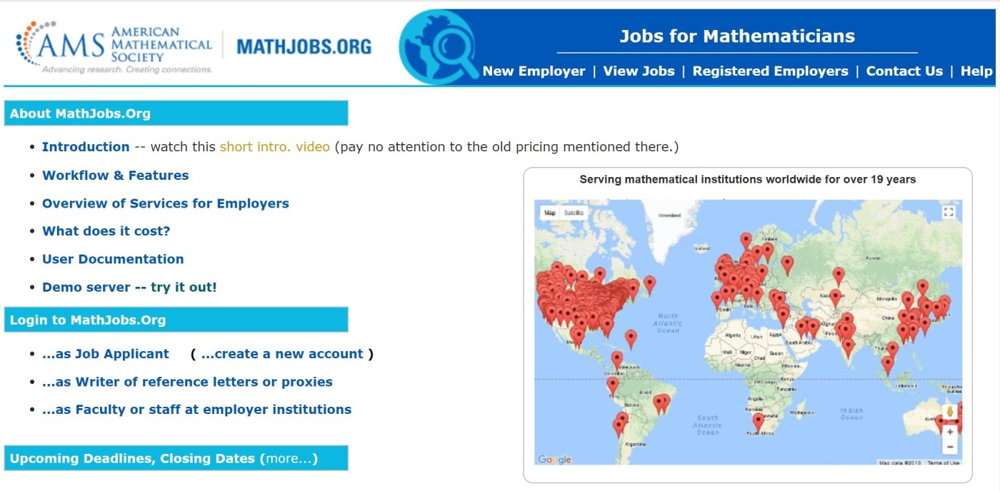

So you are almost there, you are making good progress on your thesis, and you are starting to think about jobs. Your goal is an academic job when you graduate, maybe a cool (research or teaching) postdoc, or even better, a tenure-track position at a nice liberal arts college, or at a larger public/private university. What do you need to do to improve your chances of landing your dream job? Well, what have you done so far? Preparing for the job market should be in the minds of graduate students nearly from day one of their PhD program or, otherwise, as early as possible. This post is a summary of the advice I give to my own students to start preparing for the job market during their graduate degrees.
Contents of This Post:
Here is a list of contents with links to the appropriate sections. Feel free to skip around:
- Introduction and Disclaimers.
- Know your Audience.
- Research Potential.
- Networking.
- About the Research Statement.
- Educational Experience.
- About the Teaching Statement.
- Colleague Potential.
- The Job Market.
- Mathjobs.org.
- The Joint Math Meetings.
- Preparation for Interviews.
- Conclusion
Introduction and Disclaimers
This post will always be “in-progress” as I intend to come back to it and add more details and commentary as I think of other items that need to be mentioned here. I would welcome any comments, feedback, and suggestions! This post, however, represents my own point of view. If you are a student, I hope you find these tips useful, but please always consult with your PhD advisor (and other folks in your department) about the best way to put together job application materials.
There are many other online resources on the subject that students may want to consult, for example (and in no particular order) see Duke’s “Applying for Jobs,” Frayer’s “A Search for an Academic Job…,” Forde’s “The Academic Job Search,” Sawyer’s “A Timeline for a Job Search in Math,” Narayan’s “The Academic Job Search in Math,” Virginia’s “Job Hunt,” Katz’ “Getting a (Teaching-Research) job,” or Kaabar’s “Preparing for Job Applications,” Folsom and Kontorovich’s “Advice for the Campus Interview,” among others.
This post concentrates on academic jobs, but it is important to remember that there are also a lot of great non-academic jobs out there for mathematicians. As someone mentioned on Twitter, and rightly so, “we do a disservice when we perpetuate the academic-only mindset.” For more details on non-academic jobs, see for instance Lamb’s “What Are You Going to Do With That?” or the Big Math Network and its job guide.
In addition, this text mostly concentrates on applying to jobs in the US… but there are a lot of great jobs in other countries too! If you would like to apply to positions outside of the US, discuss this with your advisor, in order to find the best way to locate jobs that match your interests. Since many non-US jobs are not advertised in mathjobs.org, we will list below some additional sites where to look.
I shared excerpts of this post on Twitter, and many other mathematicians and students commented and provided some of their own views. I will be editing this document to incorporate some of those thoughts here as well. There were also interesting offshoot conversations such as this one or this one.
Before we begin, one warning about the unfortunate reality of finding a job. It is hard. The job hunt is stressful, a very long, drawn-out process, with uncertain results, and very hard to go through, for you and your loved ones around you (for my own personal experiences, see the series of posts that begin with this one). However, there is a lot you can do as an applicant to tip the scale in your favor and, as suggested above, the earlier you begin tipping the scale, the better results you will achieve in your search. So let’s get planning ahead!
If you are going to take away one piece of advice from this post, let it be this one: start thinking about your resume as early as possible during your grad school years. How are you planning to present yourself to potential employers? What are going to be the highlights of your job applications? The sooner you figure out what your best skills are, the sooner you can start polishing those to make them shine. But you also need to spend time improving all the other skills that hiring committees consider essential. Your file should not be supported on one single item (e.g., your amazing research) but, instead, you should be able to demonstrate that you have been trained to be a well-rounded mathematician: a colleague, an educator, and a researcher.
However, as someone pointed out on Twitter, your motivation to go to grad school in math should be your passion for math, and not finding a job in academia. In order to succeed in grad school you really need to love math and the research you are doing. But you can do the math you love and also be strategic about your career goals at the same time. Win-win!
Know your Audience
Before we go into specifics on how to apply for jobs, let us think for a moment about the “consumers” of PhDs. First of all, those who will look at your file are very much like the professors in your own department. So look around you, meet faculty, and talk to them about jobs! What are they looking for during a hiring season? The more opinions you get, the closer you will be to having a good picture of what the ideal candidate may be.
One thing is clear: it is no longer enough to graduate with a “strong thesis,” whatever ‘strong’ means. You need to aim to be the whole package. In order to be marketable at a wide range of institutions (and here I mean institutions in the USA for the most part), the ideal candidate needs to have demonstrated excellence in research, ample educational experience, and have great colleague potential (not necessarily in that order). Note that most (about 58% of) tenure-eligible faculty jobs in the US are at non-PhD-granting institutions where teaching is a great part – if not all – of the institution’s focus (see the AMS 2017 report on the profession, Figure D.2 on p. 1722; see also the AMS 2017-18 report on academic recruitment).
In the rest of this post, let us try to break these requirements down and give tips on how to improve your file with each of these goals in mind.
Research Potential
Yes, it is true, you should try to produce the “strongest thesis” possible during your PhD. But what does that even mean? “Strongest” here, in my opinion, actually means “most interesting” to a wide audience of mathematicians in your area (or, even better, including others outside of your immediate area!). In most cases, the PhD student is at the mercy of their PhD advisor and the problem that was suggested to them. But you, as a student, can also be in control by trying to figure out how your problem fits into the larger picture of your research area. How? Start by asking your advisor and other faculty in your department. Then go to conferences and attend lectures related to your problem. Read articles in the arXiv related to your thesis. And make notes of how your problem fits into the larger puzzle. Once you figure it out, then try to “spin” how you talk about your research, so it is clear to the audience that you know how your own work belongs to and enriches the larger framework. This will increase the interest in your research problem, and it will show that you have a breadth of knowledge that some PhD candidates unfortunately lack (or at least they do not know how to convey it). Even better, start talking early to other students and mathematicians that are working on problems related to yours. This might have the very desirable side-effect of finding a potential collaborator, so that you can start a project in parallel to your PhD work (warning: consult your advisor before starting other projects that may consume your time). This brings me to a new important point: networking.
Networking
Networking as a grad student (as a postdoc too!) is really, really important. Start in your department: the first people you will communicate with and meet are the staff members in your department offices. Get to know them! Be friendly, ask for and follow their advice, be thankful for their help. The staff will be critically needed at several stages during your PhD, so be mindful of that.
Once you start your program, get to know your fellow grad students, including those in areas far from yours. Of course, it is healthy to be social and friendly to your peers, but it also helps to be able to talk to people from other areas about your own research and theirs (this is good practice for job interviews where you will talk to people from all areas!). Building a community around you will help you all succeed.
Start attending your local seminars, in your math area, and related areas. This might seem pointless at first: you will get lost early in the talk. That’s ok and expected to some extent (unfortunately the quality and level of math talks is somewhat unpredictable). Some talks are more specialized than others, but you should be able to get some sense of what the speaker is trying to convey (when you do not, ask! Ask the speaker or your advisor about what was going on in that talk). The most important point here though is to meet the speaker after the talk, or even better, during tea, lunch, or dinner (hopefully subsidized by your advisor or research group!). It’s important for you to attach faces to names and, vice versa, it will be useful if other mathematicians recognize your face and/or name at a later time (e.g., when your advisor suggests your name for their local seminar). You never know who you will cross paths with in the future! One of my first papers was a collaboration with a mathematician that spoke at the number theory seminar at Boston University while I was a grad student, and was looking for help with a paper he was working on. So always be on the lookout for opportunities that match your interests!
Next, start going to conferences in your field. During the conference breaks and meals, mingle and meet as many grad students in other departments as possible. Some of these people will be your future colleagues, collaborators, confidants, people who you might email questions to, perhaps write papers with. If you are lucky, they might be organizers of local grad student seminars that you might be able to be invited to and speak at.
Of course, during a conference or seminar, also make an effort to meet speakers. If your advisor is around, ask them to introduce you to people. Try to ask questions about the math you see in talks – most people are happy to answer students’ questions!
When you have results towards your thesis, start by giving a talk to your fellow grad students about your area and a bit about your findings. Ask your advisor for a spot at your local seminar, so you can practice giving a research talk. Let people know you welcome feedback on your talk. There is only one way to get better at giving talks: give many talks and listen to people’s advice. Once you are ready, ask your advisor and other faculty for help getting you to speak at other institutions’ seminars, and conferences that have 15-20 minute spots for grad students (e.g., regional AMS meetings). Keep an eye open for such events and propose talks to the organizers.
When networking, keep in mind that it would be wonderful if by the time you graduate, you can get a letter of recommendation about your research from a faculty member who works outside of your own institution. For example, your research is probably related to someone else’s work, let’s call them Professor X. You may have communicated with Prof. X by email, asking them questions, or maybe you have sent them a copy of your thesis. Perhaps Prof. X invited you out to speak at their seminar, or at a conference they organized, and they had a chance to attend your talk. The more interactions you have had with Prof. X, the easier and more natural it will be to ask for a letter of recommendation, and it is more likely that Prof. X is expecting to be asked for a letter. So, your job (with the help of other professors in your department) is to make all these interactions happen and be meaningful, so that Prof. X accepts writing a letter and they can write a strong letter for you.
Artwork for the cover of Astonishing X-Men vol. 4, 7 (March 2018 Marvel Comics), by Mike Deodato Jr.
About the Research Statement
As part of your application, you will need to include a research statement that summarizes your own work and describes briefly your future projects. This document is typically a 5-page essay, plus a page of references (Google “research statement in math” to see real-life samples). The document and level of sophistication of the math within depends on the schools you are applying to. In other words, who is the audience of your statement? Ideally (but this is a lot of work), a candidate would write two statements: one for strictly research postdoctoral positions, and one for visiting positions at colleges and universities that may be teaching focused, or perhaps a department that does not have a mathematician working strictly in your topic. The former kind of statement would be more technical than the latter, and it would be written mostly with specialists in mind. The latter kind of statement would be much more general and gentle, so that anyone in an area relatively close to yours can read it and get a good idea of what you are working on. Either way, your statement should begin with an eloquent introduction that motivates your research and relates your work to at least one of the major current research trends, and more specifically to other important published works. The introduction should also showcase your breadth of knowledge we discussed above in the section for Research Potential.
At least in my opinion, your statement should be thought of as an advertisement of your work and the techniques you are fluent with, and there is no need to go deep into technicalities that only a few specialists may be interested in. Those same specialists can read your papers in your website or the arXiv. So instead, in your statement, you should make an effort to showcase your theorems, their consequences, and how they relate to other big results. It is also a good idea to end your essay with a summary of other work in progress or ideas for future work, so that the reader knows that you have the research potential we hope for, beyond your dissertation.
A great research statement also establishes that you are ready to be an independent researcher. In addition, it is a very positive sign if you already have an incipient network of collaborators, and this comes through in your statement. See the section above about Networking.
Before you get started writing your own statement, though, ask your advisor and friends for samples of previous (successful) research statements, so you can have a look and get a better idea of what to do.
Here is a sample structure of a research statement:
- Brief intro, and summary of the contents of the document.
- Introduction to your area of research.
- Statement of results, and corollaries. Comparisons with similar works by others.
- Future directions.
- References/Bibliography.
Educational Experience
Many of us in the profession care deeply about our teaching and our students, and we strive to constantly improve our undergraduate and graduate programs. Thus, we expect the same from those we hire, even visiting faculty and postdocs, including research postdocs. No matter how great your research is, if you are unprepared to teach your own courses (and do a good job at it!), then you are not a good fit in a department where we value our under/graduate program and we care about our under/graduate students.
You should consider your graduate program as an apprenticeship to be a professor, and as such, you should use your years in grad school to fine tune your teaching skills. Hopefully, your department runs a graduate teaching program, to help you improve your classroom technique, and you should take advantage of all such opportunities. In particular, it is important to diversify your teaching experience. By this I mean that while it’s certainly easier to be a TA for Calculus 1 every semester, it is much more important for your CV that you have experience teaching a diverse range of courses (for example, it’s desirable to have experience teaching Calculus up to Multivariable, and if possible Linear Algebra or Differential Equations). It is also important to have as much experience as possible as solo instructor (so not just a TA), so seek out such assignments.
Keep in mind that you will need at least one teaching letter of recommendation in your file, so start thinking early about who that writer might be. The wider a range of courses you’ve taught and the more you’ve stepped out of your comfort zone to teach these courses, the easier of a job your letter writer will have.
What if your teaching evaluations are not that great? As long as you do care about your teaching, then there are lots of resources out there to help you improve your teaching technique. Your department probably has a graduate program director (or a director of graduate teaching), who can point you in the direction of useful help services. Most institutions have a “Center for Teaching Excellence” and there you can find workshops to attend, and staff that are dedicated to help you improve your classroom technique. You should invite either someone at this center or someone in your department (e.g., your advisor, fellow grads) to visit your classes, so that they can give you pointers on what to improve. Many departments have faculty whose job involves doing such classroom visits.
You should also think hard about the pedagogy of your research talks. Your advisor can also help, by watching you give practice talks and giving you pointers. You can also ask your fellow grad students for help, and trade being a test audience for each other as you practice giving 15-20 minute talks. In your talks, always include a nice introduction, and plenty of concrete examples that clarify the concepts you are describing.
Note that educational experience is a broad umbrella and it includes all educational experience and initiatives! You can contribute to the educational mission of your institution and department in many ways, and as before, you should strive to participate in as many initiatives as possible, particularly those that match your interests. For instance, other contributions beyond the classroom are: outreach activities, online resources, summer programs, instructional conferences, learning seminars, directed reading programs, tutoring, survey-style writing, etc. All of these can be of great value: they show you care about the community at large, and they can be an interesting highlight in your applications, and a valuable topic to bring up and chat about during interviews.
About the Teaching Statement
As part of your application, you will need to write a teaching statement or teaching philosophy statement. You can find samples online, and other resources on how to write it (see for example Oxley’s “Writing a Teaching Statement“).
Use your teaching statement as the opportunity to summarize all the educational activities (see prior section) that you have participated in during your grad program to grow as an educator. While we do want to hear about your own philosophy, and your own approach to teaching students, many of us are more interested in a teaching portfolio, where you showcase all the different educational projects you have engaged in, and more importantly all those others that you have initiated or helped put together.
First, describe your teaching experience, what courses have you taught, what was your role, your approach, your methods, etc. Nowadays it’s crucial that you are tech savvy, and that you have experimented with different types of educational technologies: what devices do you use, what pieces of software, do you use online discussion boards? How do you structure assessments in your classes?
Second, discuss your results. How did your methods work out in your classes? What did not work (introspection is great) and what worked really well? You do not need to share the entirety of your teaching evaluations, but if they are good, then include a summary box with your scores. Also, it’s nice to see a few quotes about your teaching from students. It’s also a good place to include some self-reflection on what you do well and you need to improve on (together with a plan on how you plan to grow).
Then, discuss other educational components that are somewhat out of the box (see the list of contributions beyond the classroom I provided above).
Finally, and this is very important, your statement should touch on diversity and inclusion in mathematics (not just in a note at the end of the statement!). What are your thoughts on the subject? How do you think you could contribute in efforts to improve diversity? How have you already contributed (e.g., outreach programs)? Do you have any relevant experience in making content accessible to broader audiences? How can we improve retention of underrepresented groups in math? How can you help? Some institutions now require a separate diversity statement, but I would encourage you to approach the topic in your teaching statement as well. As with everything else, students should start thinking about issues of diversity and inclusion early in their degree. As someone pointed out on Twitter, “we can all spot the difference between a diversity statement merely full of all the right buzzwords and platitudes, and a diversity statement borne out of real efforts and experiences.”
Below you can find a summary and a sample structure for a teaching statement. I suggest using sections with clear headers in boldface so that the reader can easily navigate to a section that might catch their attention:
- Brief summary of contents of the document.
- Brief intro and brief teaching philosophy statement.
- Teaching experience.
- Methodology.
- Results, praise, and evaluations.
- Other educational contributions.
- Commitment to diversity and broader impacts.
Colleague Potential
If you are invited to an interview on the phone, at the JMM, or on campus, then you are on paper qualified (probably over-qualified…) for the position. At this point, the rest of the interview process will try to establish that you have great colleague potential. Mathematicians are people, and we like to hire nice people. We will be working with you anywhere from a few years to the rest of our careers, so we want to make sure you are going to be a nice colleague to work with. How can you possibly prepare for this?
It is quite simple. You can practice this facet of academia just like any other skill. As a grad student, you are part of an academic department, so make sure to be an integral part of the department life. Attend social events, tea breaks before/after talks, colloquia, grad student events, department parties, etc. Even better, help organize these events! Also, propose similar events that you think would be welcome by members of the department (e.g., grad seminars, one day conferences, invited speakers, panel discussions). Particularly, we are interested in initiatives aimed at improving the atmosphere in the department and/or the departmental life of underrepresented groups (e.g., creating an AWM chapter, joining NAM).
Being a good colleague does not start and end in your department. There is an entire mathematical community that you can be a part of, either online, or through events such as conferences. We want you to be visible, and as engaged as possible in the community, e.g., you can help with the organization of conferences and summer programs, help writing grants, or provide online resources for other fellow grad students, for example.
The Job Market
The job search process starts early in the summer before your last year in grad school. The first step is to get the green light from your advisor, who should confirm you are likely to graduate in the upcoming year. Once that’s settled, the candidate should spend the summer getting materials ready.
- A professional website with: your papers and research interests, materials for the courses you are teaching, a public version of your CV, other materials and links to initiatives you are part of.
- A curriculum vitae.
- A research statement and a publication list.
- A teaching statement and/or a teaching portfolio.
- A diversity statement.
- A generic cover letter that you may personalize later for each institution you apply to.
- If possible, an early draft of your thesis.
- Find and ask letter writers for a letter of recommendation.
An important piece of advice: circulate your first drafts of application materials early among faculty, fellow grad students, friends, family, so they can give you their best advice and feedback. It takes time for people to read these papers and give you valuable feedback, and then you need time to edit and revise these documents to get them ready for prime time! So get started early summer!
In addition, in August or so (not much later), it is time to decide who will be your letter writers and ask them if they would be willing to write a letter for you. You will need a minimum of three research letters and one teaching letter, but keep in mind that some institutions may require a total of five letters. Ask your letter writers what materials they would like to see when preparing their letters. At the very least, they will want to see your research and/or teaching statement, and it would be great if they can offer feedback when they look at your materials. They will probably need at least a month to write your letter, so keep the timing in mind. Last thing you want is to ask for a letter at the last minute.
Choose your letter writers wisely. Who knows your work best? An ideal letter writer is a person who expects to write a letter for you, so that is why it is crucial to cultivate these relationships before it is time to ask for a letter. Discuss the names of letter writers with your advisor.
Mathjobs.org
Once the application materials are ready, it is time to start looking at mathjobs.org to see what jobs are available and what deadlines are coming up. The first deadlines are as early as September, but most deadlines are after mid October. However, new job ads will keep appearing until as late as April or May, so keep looking at mathjobs until you have a job lined up! Do not give up. Applying for jobs is a marathon, not a sprint, so be mentally ready to be looking for jobs for months. Talk to your advisor early on about what jobs are available and what jobs they think you are a good fit for. Also, keep a spreadsheet with jobs and deadlines, which you should update frequently, to avoid missing any deadlines.
By the way, while most jobs are posted on mathjobs, some institutions do not post their openings to that site. For instance, some jobs appear only in the jobs section for the Chronicle of Higher Ed, so you might want to look there also from time to time. In addition, if you are interested in a particular school, check out their website for job ads that may not have appeared elsewhere (or send a message to someone in their department).
Jobs that are not in the USA are rarely posted on mathjobs. Ask your advisor for help in locating positions outside of the US, as some of them are advertised in area-specific ways. Someone on Twitter suggested the following sites instead for non-US math academic jobs: European Mathematical Society’s job ads, europeanwomeninmath.org, Times Higher Education, math-jobs.com, Australian Math Society, etc.

When applying for (temporary/visiting) jobs, if at all possible, try not to restrict yourself either geographically or on the type of institution you apply to, so that you can cast the widest net possible. However, it makes no sense to apply for jobs that you would not accept if they offered them to you, so be mindful of what you apply for, so that your application does not become noise. Some locations may not be ideal for you, but you should think of a postdoc or visiting professorship as an internship that will help you get a tenure track position closer to the geographical area of your choice so, in the grand scheme of things, three years in an institution that is far away but advancing your career (either because of the teaching experience or the research collaborators or both) is worth the time investment.
This is almost a tautology but your best chances of landing a job are at positions that you are a very good fit for, so spend extra time working on those applications that you are particularly excited about. First, spend some time learning about their department, who works there, and what kind of research they work on. Then, write cover letters that are specific to these institutions, where you explain why you think you are a good fit for the position. (Some of my colleagues are indifferent about institution-specific cover letters, but some of us pay a lot of attention to the cover letter itself.) Let your advisor know what jobs you think would be best and, if they agree, see if they can write a message to someone they know in the department, with a personal recommendation in the form of a brief email message. The reality is that a personal connection to the job goes a long way.
I always encourage students to send a brief email message to people in their research area at institutions with job openings that you consider yourself a good fit for. Of course, first, learn about their research and what they do, and then send them a brief email message, letting them know who you are and why you would be excited to work at that college/university, or why you would be excited to work with them specifically. One brief email message can’t hurt, and being proactive shows initiative and drive to succeed.
The Joint Math Meetings
During your last year of grad school, plan to attend the Joint Math Meetings in January. Since this is the largest annual mathematics gathering, many institutions send representatives to (briefly) interview candidates during the JMM. Thus, indicate in your cover letters that you will be at the JMM and that you’d be happy to meet with their people during the meeting. If possible, try to give a talk at one of the JMM sessions, for greater visibility. By the way, apply for student funding to attend the JMM!
And for the love of God, do not wear a suit at the JMM (here you can replace the word ‘suit’ by any other type of formal clothing that makes you feel uneasy). If you own a suit, you wear it often, and are comfortable wearing a suit, then by all means, wear a suit to the JMM. Otherwise, if you are not used to wearing suits, don’t. The last thing you want is to feel uncomfortable in your own clothes (everyone can tell and it makes everyone uncomfortable). You can definitely dress up for an interview, but some business-casual clothing suffices! Just wear what makes you comfortable and confident and professional. (I bring up the topic of dress code because, invariably, students ask about it before heading to the JMM.)
Preparation for an Interview
When you finally receive the happy news that you are invited for an interview (by phone, video-conference, or in person), it is time to prepare, prepare, prepare. First, review your own materials. What are the main points that you want to highlight during the interview? Then, study their department website, their faculty composition (who works there, and what they do, what they are known for), the structure of their under/grad program, etc. Then go back to your own files: what makes you a good fit for this particular department? Why do you think they chose you?
Prepare to answer some typical interview questions (please prepare concise answers ahead of time and be ready to expand if they ask). What attracts you to their department? Can you summarize your research and/or teaching experience? Can you describe a positive/negative teaching experience and how you handled it? Do you have experience teaching large classes? Do you have online teaching experience? What are some research problems you plan to tackle soon? How do you plan to keep up your research productivity in their department (which may or may not have people in your area)? Have you been involved in research projects with undergraduates? Would undergrads be able to participate in your research? Have you been involved in any efforts to improve retention of underrepresented groups in mathematics? Etc.
You should also be ready to ask questions! An interview goes both ways. Some typical questions include: what is their research expectation of a person in the position they are hiring for? What is a typical teaching load in their department? What courses do postdocs/visitors/tenure-track faculty usually teach as their load? Are there funds available for research/travel/student funding? Are there seminars in your area (if not apparent in the website)? Are there service expectations (such as advising, committees, etc.)? What jobs did previous postdocs get after they left their institution? However, avoid asking questions with answers that one can easily find out by studying their website.
During on campus interviews, you might be asked to give a talk, either a research talk or a colloquium-style talk, or a presentation aimed at undergrads. Discuss a suitable topic with your advisor, and practice the talk several times in front of an audience before you travel to the interview. The best job talks are those that are not overly technical and engaging, but do give a clear sense of the depth and breadth of knowledge of the candidate.
In summary, be prepared. Be professional. Be enthusiastic. Be confident about your skills!
Conclusion
The job market can be hard to navigate, but there are many people around you who have experience in finding jobs, and who can help you in your own search. Unfortunately, there is a lot that is out of the candidate’s control (what institutions will have openings, how many jobs of each category are available, how many candidates get interviews and when), but there is a lot one can do to be better prepared and better positioned when the job season finally arrives. Unfortunately, there is some degree of randomness/unfairness in any job search, so a failed search can happen, and it should not be attributed to lack of preparation. Students sometimes stay an extra year in grad school after one failed search, and the next year they find a great job, so that may be an option. Even those that did everything right might be unlucky in their search. The trick is to tip the odds in your favor.
The reason to advocate for a well-rounded resume is so you are marketable at a wide range of institutions and types of positions, research, research/teaching, teaching jobs, PhD-granting and non-PhD-granting institutions, colleges and universities, etc. As someone mentioned, “be prepared to end up at a non-PhD granting research institution.” My first job was a visiting position at a small liberal arts college, something I did not anticipate when the search started, and I had a fantastic experience there (Colby College).
The end result of the search may not be what you originally hoped for. But, in my experience, the great majority of the candidates that I thought were well poised to succeed, did succeed in their job searches. So good luck and always keep asking for advice from those who have succeeded before you!